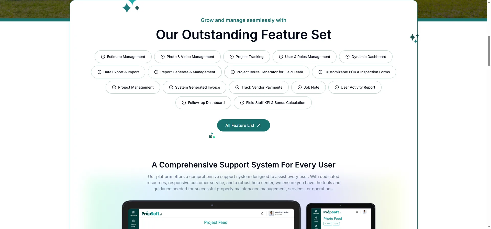

Proptech · SaaS · Apex DMIT
PropSoft.ai
The marketing site that turns a sixteen-feature product into one free-trial signup.
- Role
- UI/UX Designer — marketing website
- Team
- Three
- Duration
- Two months, Apex DMIT
- Platform
- Responsive web
- Constraint
- Marketing-first site, built from scratch
- Outcome
- Client reported a 20% increase in sales
- With
- Rajan Das Gupta

The productWhat PropSoft.ai is
PropSoft.ai sells property maintenance software to companies coordinating field teams across many properties. It spans four surfaces — a marketing site, a web app, an iOS app and an Android app. I designed the marketing site.
The product carries sixteen distinct features: estimates, photo and video capture, project tracking, roles and permissions, dashboards, import and export, reporting, route generation for field teams, customisable inspection forms, invoicing, vendor payments, job notes, activity reports, follow-ups, and field-staff KPI and bonus calculation. It sells at $79 a month for three users, with fifty free projects on trial.
01The constraint
Two months, from scratch, and the site had to sell rather than explain. There was no existing brand system, no component library and no prior site to iterate on — the visual language, the structure and the argument all had to be built at once, for a product carrying sixteen features.
Twelve interviews, by phone and in person, turned up the same picture five different ways. Managers were tracking work by hand. Repetitive tasks were eating their days. Rent and payment records carried errors. Nothing lived in one place. And they had no way to promote themselves or let clients serve themselves.
So the problem was never a shortage of features. It was that every feature added made the case harder to make on a single page.
02Designing for Sara
The research produced a persona the whole site was built against. Sara is 37, manages a portfolio of around thirty residential and commercial properties, and is responsible for tenant relations, maintenance coordination and financial tracking. She is not a software buyer. She is a manager who has run out of hours.
Her empathy map is blunt about it. She says she spends too much time on repetitive tasks that could be automated. She thinks there has to be a better way to streamline property management. She feels frustrated by repetitive work, and overwhelmed by the volume of it.
That gave each of the five insights something concrete to answer to, and the site addresses them in order: centralisation first, then tracking, then payments, then communication, then the self-service and promotion that managers said they had no way to offer.
03What the site does
The hero leads with a property, not a dashboard. A maintenance manager is being sold an outcome, not software, and the page reflects that — the product screenshots come later, once there is a reason to care.
The sixteen features sit in a single scannable grid rather than sixteen explanations. A visitor can find the one thing they came for without reading past the fifteen they did not. Everything beyond that grid lives on a separate features page.
Pricing is published rather than hidden behind a sales call, and every section resolves to the same action: start a free trial, fifty projects, no card. For a manager with no hours to spare, that is a smaller ask than booking a demo.
The visual system was built from nothing: a teal primary, Roboto for headings and Inter for text, and two icon sets — outline and bold — so the site could stay consistent as it grew past forty screens.



04What happened
PropSoft.ai is in use by a property reservation company in the United States. After the site launched, the client reported a 20% increase in sales, with the site giving the marketing team something to sell from rather than explain around.
For scale: the platform now runs 5,000+ projects and reports 500+ users globally. Those are the product's numbers across four surfaces and a sales team — not the marketing site's, and not mine. They are here as context for what the site was selling.
05Credit
Designed with Rajan Das Gupta at Apex DMIT, in a team of three. The case study is published jointly on Behance.
Next: Nexis HRM
Data-dense dashboards on a reusable component framework. Read it →